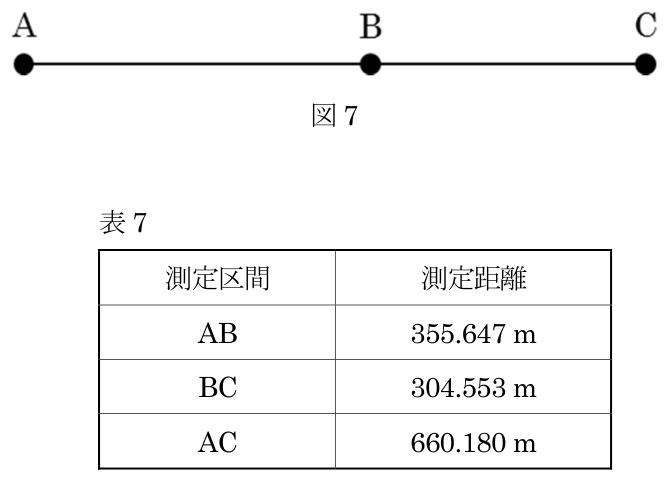
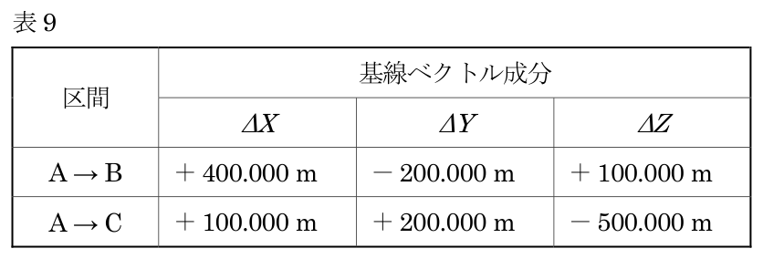
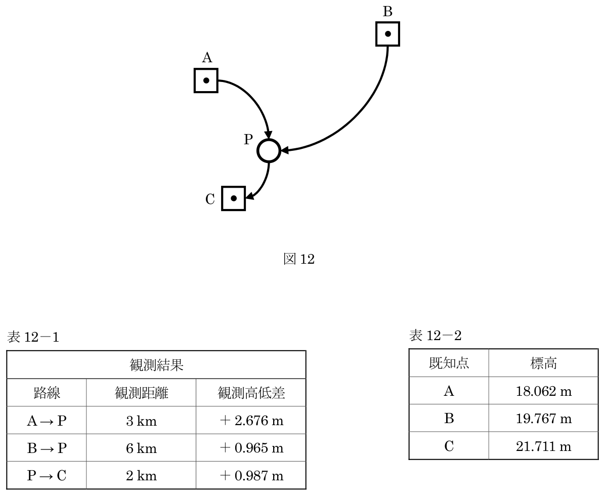
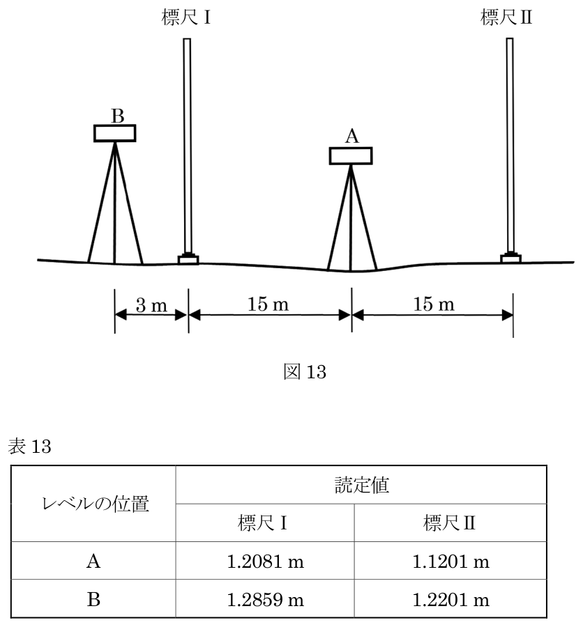
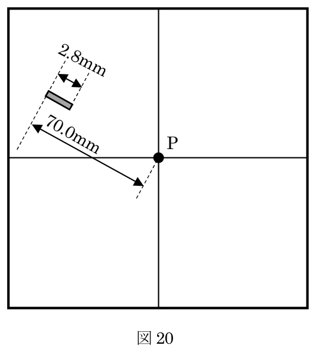
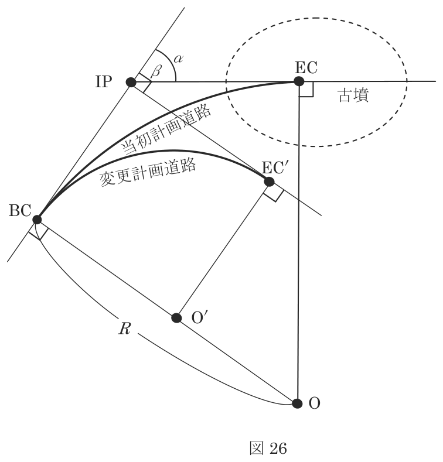
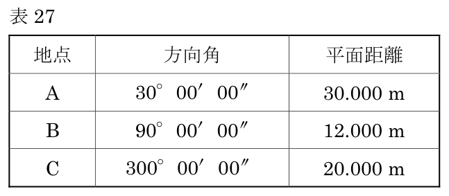

平成29年度（H29）計算問題
測量士補試験の計算問題 10 問。紙と鉛筆で解いてから「答えと解説」を開いてください。関数の値は試験の巻末の関数表を使います。
No.3数学
次のa～cの各問の答えの組合せとして最も適当なものはどれか。次の中から選べ。
ただし，円周率π＝3.142とする。
なお，関数の値が必要な場合は，巻末の関数表を使用すること。
a．43°52′10″を秒単位に換算すると幾らか。
b．43°52′10″をラジアン単位に換算すると幾らか。
c．頂点A，B，Cを順に直線で結んだ三角形ABCで，辺BC＝6 m，∠BAC＝130°，∠ABC＝30°としたとき，辺ACの長さは幾らか。
- a=157,920″／b=0.383ラジアン／c=3.916 m
- a=157,920″／b=0.766ラジアン／c=4.667 m
- a=157,930″／b=0.766ラジアン／c=3.916 m
- a=157,930″／b=0.383ラジアン／c=4.667 m
- a=157,930″／b=0.766ラジアン／c=4.667 m
答えと解説
答え 3
a 43°52′10″ を秒に 1° ＝ 60′ ＝ 3,600″、1′ ＝ 60″ です。
52 × 60 ＝ 3,120″
154,800 ＋ 3,120 ＋ 10 ＝ 157,930″
b 43°52′10″ をラジアンに まず分と秒を度に直します。180° が π ラジアンなので、度に π ÷ 180 を掛けます。
43°52′10″ ≒ 43.8695°
43.8695 × 3.142 ÷ 180 ≒ 137.838 ÷ 180 ≒ 0.766 ラジアン
c 三角形の辺 AC 正弦定理は「辺 ÷ sin（その辺の向かいの角）」がどの辺でも同じ、という決まりです。
AC ＝ 6 × sin 30° ÷ sin 130°
sin 130° は表に無いので、sin 130° ＝ sin (180° − 130°) ＝ sin 50° を使います。
この問題の違和感を報告
No.7多角
図7に示すように，平たんな土地に点A，B，Cを一直線上に設けて，各点におけるトータルステーションの器械高及び反射鏡高を同一にして距離測定を行い，表7の結果を得た。この結果から器械定数と反射鏡定数の和を求め，AC間の測定距離を補正した。補正後のAC間の距離は幾らか。最も近いものを次の中から選べ。
ただし，測定距離は気象補正済みとする。また，測定誤差はないものとする。
なお，関数の値が必要な場合は，巻末の関数表を使用すること。

- 660.160 m
- 660.170 m
- 660.180 m
- 660.190 m
- 660.200 m
答えと解説
答え 1
器械（TS）と反射鏡には、それぞれ決まったずれ（器械定数と反射鏡定数）があり、距離を 1 回測るごとに同じ量だけずれます。2 つを合わせた補正量を K とすると、本当の距離は「測った値 ＋ K」です。
A・B・C は一直線なので、本当の距離では AB ＋ BC ＝ AC になります。
660.200 ＋ 2K ＝ 660.180 ＋ K
K ＝ 660.180 − 660.200 ＝ −0.020 m
この問題の違和感を報告
No.9GNSS
GNSS測量機を用いた基準点測量を行い，基線解析により基準点Aから基準点B，基準点Aから基準点Cまでの基線ベクトルを得た。表9は，地心直交座標系（平成14年国土交通省告示第185号）におけるX軸，Y軸，Z軸方向について，それぞれの基線ベクトル成分（ΔX，ΔY，ΔZ）を示したものである。基準点Bから基準点Cまでの斜距離は幾らか。最も近いものを次の中から選べ。
なお，関数の値が必要な場合は，巻末の関数表を使用すること。

- 640.312 m
- 670.820 m
- 754.983 m
- 781.025 m
- 877.496 m
答えと解説
答え 4
基線ベクトルは「ある点から別の点まで、X・Y・Z 方向にどれだけ動くか」を表した数です。B→A は A→B の符号を全部逆にしたものなので、B→C ＝ (A→C) − (A→B) です。
ΔY ＝ 200 − (−200) ＝ 400 m
ΔZ ＝ −500 − 100 ＝ −600 m
斜距離（2 点を結ぶまっすぐな長さ）は、たて・横・高さが 300・400・600 の箱の対角線です。三平方の定理を 2 回使うと、3 つの 2 乗を足して √ を付けることになります。
780² ＝ 608,400 なので、780 より少し大きい → 781.025 m
この問題の違和感を報告
No.12水準
図12に示すように，既知点A，B及びCから新点Pの標高を求めるために水準測量を実施し，表12－1の結果を得た。新点Pの標高の最確値は幾らか。最も近いものを次の中から選べ。
ただし，既知点の標高は表12－2のとおりとする。

- 20.729 m
- 20.730 m
- 20.731 m
- 20.732 m
- 21.717 m
答えと解説
答え 2
3 つの既知点から、それぞれ P の標高を出します。高低差は「矢印の先が、矢印の元より何 m 高いか」です。P→C は P から C へ上がる量なので、C から P を出すときは引きます。
B から 19.767 ＋ 0.965 ＝ 20.732 m
C から 21.711 − 0.987 ＝ 20.724 m
水準測量は距離が短いほど正確なので、重さ（どれくらい信用するか）を距離に反比例させて平均します。
20.724 m より上の分だけ（mm で）平均すると、14、8、0 なので
最確値 ＝ 20.724 ＋ 0.006 ＝ 20.730 m
この問題の違和感を報告
No.13水準
レベルの視準線を点検するために，図13のようにA及びBの位置で観測を行い，表13に示す結果を得た。この結果からレベルの視準線を調整するとき，Bの位置において標尺Ⅱの読定値を幾らに調整すればよいか。最も近いものを次の中から選べ。
なお，関数の値が必要な場合は，巻末の関数表を使用すること。

- 1.0957 m
- 1.1321 m
- 1.1957 m
- 1.2179 m
- 1.2445 m
答えと解説
答え 3
A は 2 本の標尺のちょうど中央なので、視準線が傾いていても 2 本とも同じだけ読みがずれ、差は正しい値になります。B では標尺までの距離がちがうので、差にずれが出ます。
B での差 標尺Ⅰ − 標尺Ⅱ ＝ 1.2859 − 1.2201 ＝ 0.0658 m
ずれ ＝ 0.0880 − 0.0658 ＝ 0.0222 m
B での差が小さいのは、遠い標尺Ⅱを近い標尺Ⅰより 0.0222 m 多く読みすぎているからです。これは、B から標尺Ⅰ（3 m）と標尺Ⅱ（33 m）の距離の差 30 m で出たずれです。ずれは距離に比例するので、33 m 先の標尺Ⅱの読みのずれは
標尺Ⅱを読みすぎているので、その分を引きます。
この問題の違和感を報告
No.14地形
トータルステーションを用いた縮尺1/1,000の地形図作成において，傾斜が一定な斜面上の点Aと点Bの標高を測定したところ，それぞれ105.1 m，96.6 mであった。また，点A，B間の水平距離は80 mであった。
このとき，点A，B間を結ぶ直線とこれを横断する標高100 mの等高線との交点は，地形図上で点Aから何cmの地点か。最も近いものを次の中から選べ。
なお，関数の値が必要な場合は，巻末の関数表を使用すること。
- 3.2 cm
- 4.8 cm
- 5.3 cm
- 7.4 cm
- 7.6 cm
答えと解説
答え 2
斜面の傾きは一定なので、水平距離は標高の差に比例します。A から 100 m の等高線までの標高差と、A から B までの標高差の比を使います。
A から B まで下がる高さ ＝ 105.1 − 96.6 ＝ 8.5 m
A から等高線まで ＝ 80 × 5.1 ÷ 8.5 ＝ 408 ÷ 8.5 ＝ 48 m
縮尺 1/1,000 では、実際の 1 m が地図上の 1 mm なので、48 m は 48 mm ＝ 4.8 cm。
この問題の違和感を報告
No.18写真
画面距離10 cm，画面の大きさ20,000画素×13,000画素，撮像面での素子寸法5 μmのデジタル航空カメラを用いて鉛直空中写真を撮影した。撮影基準面での地上画素寸法を20 cmとした場合，撮影高度は幾らか。最も近いものを次の中から選べ。
ただし，撮影基準面の標高は0 mとする。
なお，関数の値が必要な場合は，巻末の関数表を使用すること。
- 3,200 m
- 3,600 m
- 4,000 m
- 4,400 m
- 4,800 m
答えと解説
答え 3
図の 2 つの三角形（レンズの上と下）は相似なので、「素子の大きさ ： 画面距離 ＝ 地上の大きさ ： 撮影基準面からカメラまでの高さ H」です。画面距離は、レンズから撮像面までの長さ。撮影基準面の標高は 0 m なので、H がそのまま撮影高度です。単位を m にそろえます。
H ＝ 0.1 × 0.2 ÷ 0.000005 ＝ 0.02 ÷ 0.000005 ＝ 4,000 m
この問題の違和感を報告
No.20写真
航空カメラを用いて，海面からの撮影高度1,900 mで標高100 mの平たんな土地を撮影した鉛直空中写真に，鉛直に立っている直線状の高塔が写っていた。図20のように，この高塔の先端は主点Pから70.0 mm離れた位置に写っており，高塔の像の長さは2.8 mmであった。
この高塔の高さは幾らか。最も近いものを次の中から選べ。
なお，関数の値が必要な場合は，巻末の関数表を使用すること。

- 68 m
- 72 m
- 76 m
- 80 m
- 84 m
答えと解説
答え 2
高塔は真上から見ていないので、写真では倒れたように写ります。先端は、カメラと先端を結んだ線が地面に当たる所にあるように写るので、根元より外側にずれます。このずれが像の長さ 2.8 mm です。主点 P は、カメラの真下が写る点です。
図の大きい三角形（高さはカメラまで）と小さい三角形（高さは高塔）は同じ形なので、「高さの比 ＝ 底辺の比」です。地面の長さの比は、写真の上でも同じ比になります。高塔の立つ土地は標高 100 m なので、地面からカメラまでの高さは 1,900 m より 100 m 小さくなります。
h ： 1,800 ＝ 2.8 ： 70.0
h ＝ 1,800 × 2.8 ÷ 70.0 ＝ 5,040 ÷ 70 ＝ 72 m
この問題の違和感を報告
No.26応用
図26に示すように，円曲線始点BC，円曲線終点ECからなる円曲線の道路の建設を計画していた。当初の計画では円曲線半径R＝600 m，交角α＝56°であったが，EC付近で歴史的に重要な古墳が発見された。このため，円曲線始点BC及び交点IPの位置は変更せずに，円曲線終点をECからEC′に変更することになった。
変更計画道路の交角β＝90°とする場合，当初計画道路の中心点OをBC方向にどれだけ移動すれば変更計画道路の中心点O′となるか。最も近いものを次の中から選べ。
なお，関数の値が必要な場合は，巻末の関数表を使用すること。

- 264 m
- 281 m
- 292 m
- 318 m
- 319 m
答えと解説
答え 2
円曲線は、まっすぐな道と道をなめらかにつなぐ円の一部です。O から O′ まで動く長さは、当初の半径 R と変更後の半径 R′ の差です。手がかりは、BC と IP の位置が変わらないこと、つまり BC から IP までの長さ（接線の長さ）が同じことです。
接線の長さ 円曲線の中心角は交角に等しく 56° で、O と IP を結ぶ線がそれを半分の 28° に分けます。直角三角形 BC・IP・O で
変更後の半径 交角が 90° なので、その半分は 45°。直角三角形 BC・IP・O′ で
移動量
この問題の違和感を報告
No.27応用
地点A，B，Cで囲まれた三角形の土地の面積を算出するため，公共測量で設置された4級基準点から，トータルステーションを使用して測量を実施した。表27は，4級基準点から三角形の頂点に当たる地点A，B，Cを測定した結果を示している。この土地の面積に最も近いものはどれか。次の中から選べ。
なお，関数の値が必要な場合は，巻末の関数表を使用すること。

- 324 m²
- 348 m²
- 372 m²
- 396 m²
- 420 m²
答えと解説
答え 4
基準点を O とします。O と 2 点でできる三角形は、2 辺とその間の角が分かるので、面積 ＝ 1/2 × 辺 × 辺 × sin（間の角）で出せます。三角形 ABC は、この三角形の足し引きです。
∠AOB ＝ 90° − 30° ＝ 60°
∠COB ＝ 60° ＋ 90° ＝ 150°
sin 150° は表に無いので、sin 150° ＝ sin (180° − 150°) ＝ sin 30° を使います。
OAB ＝ 1/2 × 30 × 12 × sin 60° ＝ 180 × 0.86603 ≒ 155.9 m²
OCB ＝ 1/2 × 20 × 12 × sin 30° ＝ 120 × 0.50000 ＝ 60 m²